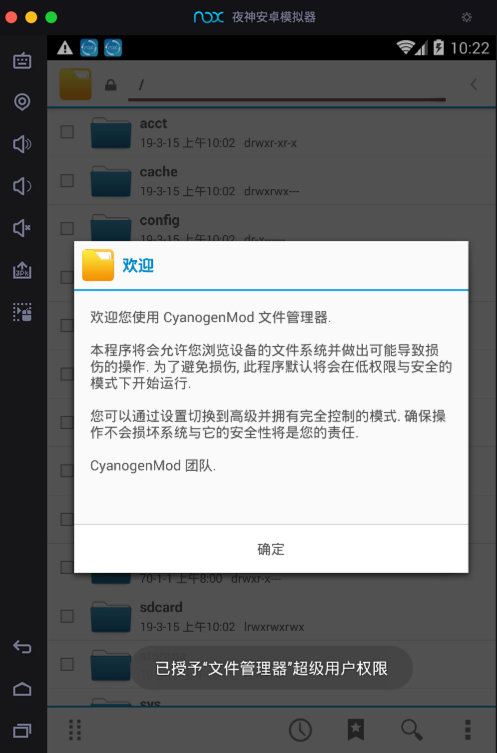
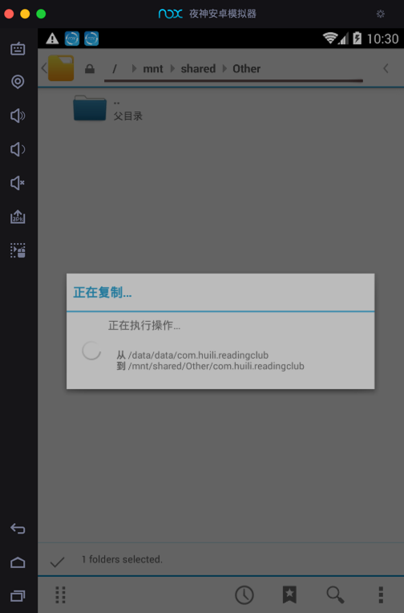
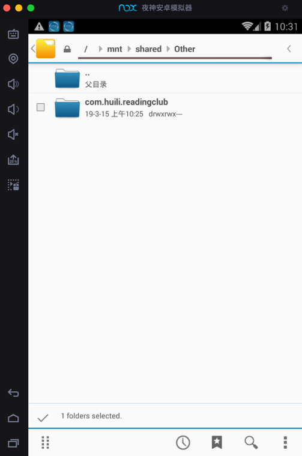
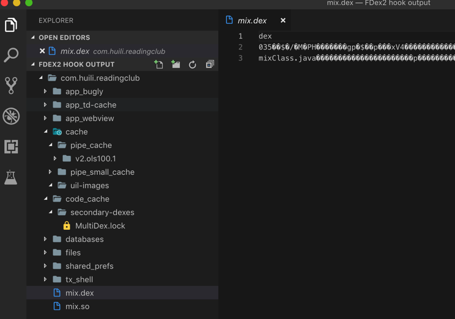

导出文件
- 背景
已经用FDex2去hook导出小花生app的文件到Nox中的：
/data/data/com.huili.readingclub
现在想要去导出整个文件夹的所有文件，从Nox导出到Mac电脑中，用于后续分析。
思路：用文件管理器把文件拷贝到共享目录
- Nox中（已挂载）的共享目录是：
/mnt/shared/Other
- Nox中（已挂载）的共享目录是：
步骤
去Nox中找到文件管理器

欢迎使用CyanogenMod文件管理器

找到的对应文件夹：/data/data/com.huili.readingclub

点击勾选对应目录
然后切换到（此处的Nox和Mac的）共享目录（/mnt/shared/Other）后，点击 粘贴选择项

则开始执行操作：正在复制...

复制完后，其不会自动刷新。需要点击返回到上一级目录后，再重新点击进来该目录，即可看到复制后的文件：

实现了导出文件的效果，去Mac中打开导出到共享文件夹中的文件：
